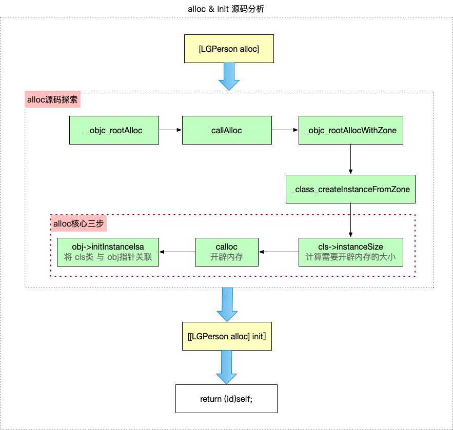

NSObject 对象的底层就是一个包含了一个指针的结构体，那么它的大小是不是就是8字节（64位下指针类型占8个字节）？
class_getInstanceSize 1 #import <objc/runtime.h>
class_getInstanceSize ()可以计算一个类的实例对象实际所需要的空间大小，也就是计算类所对应的结构体的大小
系统在为类的结构体分配内存时内存对齐，以一个指针的长度作为对齐系数，64位系统指针长度为8个字节，类所对应的结构体，头部肯定是一个 isa 指针
1 2 size_t size = class_getInstanceSize([NSObject class]); NSLog(@"NSObject对象大小：%zd", size); //8
malloc_size() 1 #import <malloc/malloc.h>
malloc_size()，函数的参数是一个指针，可以计算指针所指向内存空间的大小
1 2 3 NSObject *obj = [[NSObject alloc] init]; size_t size2 = malloc_size((__bridge const void *)(obj)); NSLog(@"对象obj所指向的的内存空间大小：%zd",size2); //16
系统为实例对象分配的内存空间，最小为16个字节
1 2 3 4 5 6 7 size_t instanceSize (size_t extraBytes) size_t size = alignedInstanceSize() + extraBytes; if (size < 16 ) size = 16 ; return size; }
区别 class_getInstanceSize 获取类的实例对象内存大小，本质就是获取实例对象中成员变量的内存大小
malloc_size 得到一个指针所指向的内存空间的大小，系统实际分配内存，利用这个可以得到对象所占用的内存大小
sizeof() 获取数据类型或变量占用空间大小，这是一个运算符
[NSObject alloc] 之后，系统为其分配了16个字节的内存，最终 obj 对象实际使用了其中8个字节内存（也就是其内部的那个 isa 指针所用的8个字节，64位系统下）
1 2 3 4 5 6 7 8 9 10 @interface Student : NSObject { @public int _age; //4个字节 int _no; //4个字节 int _grade; //4个字节 } Student *std = [[Student alloc] init]; size_t size = class_getInstanceSize([Student class]); //24 size_t size = malloc_size((__bridge const void *)(std)); //32
Student 结构体所有成员变量所需要的总空间为20个字节，根据内存对齐的原则，最后结构体所需要的空间应该是8的倍数，也就是24个字节；实际系统分配内存大小是16的倍数32个字节
LLDB查看内存
1 0x281442fa0-0x281442fa0-0x281442fa0
1 2 3 4 5 6 7 8 9 10 11 (lldb) po p <LGPerson: 0x281442fa0 > (lldb) x p 0x281442fa0 : 2 d 17 d7 02 a1 41 00 00 28 c0 d6 02 01 00 00 00 -....A..(.......0x281442fb0 : 0 a 00 00 00 00 00 00 00 64 00 00 00 00 00 00 00 ........d.......(lldb) po 0x0a 10 (lldb) po 0x64 100 (lldb) po 0x0102d6c028 a
前8位2d 17 d7 02 a1 41 00 00 是isa的内存8个字节
0a 00 00 00 是 age 占4个字节
64 00 00 00 是 height 占4个字节
28 c0 d6 02 01 00 00 00 是 name 占8个字节
alloc init 
1 2 3 + (id)alloc { return _objc_rootAlloc(self); }
1 2 3 4 _objc_rootAlloc(Class cls) { return callAlloc(cls, false/*checkNil*/, true/*allocWithZone*/); }
1 2 3 4 5 6 7 8 9 10 11 12 13 14 15 16 17 static ALWAYS_INLINE id callAlloc(Class cls, bool checkNil, bool allocWithZone=false) { #if __OBJC2__ if (slowpath(checkNil && !cls)) return nil; if (fastpath(!cls->ISA()->hasCustomAWZ())) { return _objc_rootAllocWithZone(cls, nil); } #endif // No shortcuts available. if (allocWithZone) { return ((id(*)(id, SEL, struct _NSZone *))objc_msgSend)(cls, @selector(allocWithZone:), nil); } return ((id(*)(id, SEL))objc_msgSend)(cls, @selector(alloc)); }
1 2 3 4 5 6 7 8 id _objc_rootAllocWithZone(Class cls, malloc_zone_t *zone __unused)// alloc 源码 第四步 { // allocWithZone under __OBJC2__ ignores the zone parameter //zone 参数不再使用 类创建实例内存空间 return _class_createInstanceFromZone(cls, 0, nil, OBJECT_CONSTRUCT_CALL_BADALLOC); }
alloc 的核心操作：
cls->instanceSize：计算需要开辟内存空间大小
calloc：申请内存，返回指针地址
objc->initInstanceIsa：将类与 isa 关联
1 2 3 4 5 6 7 8 9 10 11 12 13 14 15 16 17 18 19 20 21 22 23 24 25 26 27 28 29 30 31 32 33 34 35 36 37 38 39 40 41 42 43 44 45 46 47 48 49 static ALWAYS_INLINE id _class_createInstanceFromZone(Class cls, size_t extraBytes, void *zone, int construct_flags = OBJECT_CONSTRUCT_NONE, bool cxxConstruct = true, size_t *outAllocatedSize = nil)// alloc 源码 第五步 { ASSERT(cls->isRealized()); //检查是否已经实现 // Read class's info bits all at once for performance //一次性读取类的位信息以提高性能 bool hasCxxCtor = cxxConstruct && cls->hasCxxCtor(); bool hasCxxDtor = cls->hasCxxDtor(); bool fast = cls->canAllocNonpointer(); size_t size; //计算需要开辟的内存大小，传入的extraBytes 为 0 size = cls->instanceSize(extraBytes); if (outAllocatedSize) *outAllocatedSize = size; id obj; if (zone) { obj = (id)malloc_zone_calloc((malloc_zone_t *)zone, 1, size); } else { //申请内存 obj = (id)calloc(1, size); } if (slowpath(!obj)) { if (construct_flags & OBJECT_CONSTRUCT_CALL_BADALLOC) { return _objc_callBadAllocHandler(cls); } return nil; } if (!zone && fast) { //将 cls类 与 obj指针（即isa） 关联 obj->initInstanceIsa(cls, hasCxxDtor); } else { // Use raw pointer isa on the assumption that they might be // doing something weird with the zone or RR. obj->initIsa(cls); } if (fastpath(!hasCxxCtor)) { return obj; } construct_flags |= OBJECT_CONSTRUCT_FREE_ONFAILURE; return object_cxxConstructFromClass(obj, cls, construct_flags); }
OC对象的本质（上）：OC对象的底层实现原理 objc4-781 objc4-756.2源码编译 macOS 10.15最新objc源码编译调试